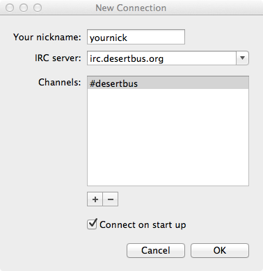
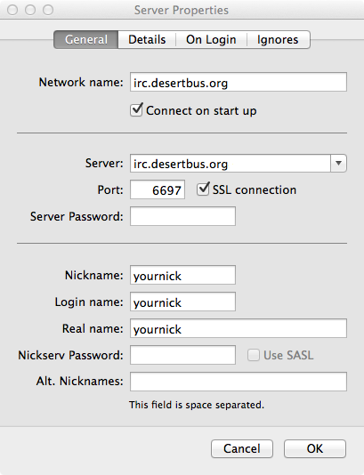
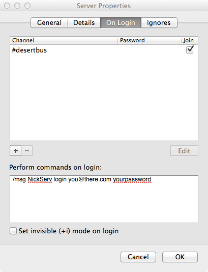

LimeChat is a free IRC client for Mac OS X. You can download it at limechat.net or from the Mac App Store.
When running LimeChat for the first time, you should be presented a screen like the one below.
Your nickname: This is the name other users will see you as. By default it is your user account's short name, but you can set it to whatever you like as long as it doesn't have any spaces.
IRC server: Enter "irc.desertbus.org".
Channels: This is a list of channels that you will automatically join when you connect. Click the + and enter "#desertbus". You might also want to add "#help" to this list as well.
Connect on start up: Check this box if you want to automatically connect when LimeChat starts (recommended).
Click the Server -> Server Properties menu item to open the server settings. You can change various server settings with this dialog.
If you want to use SSL (recommended), change the Port to 6697 and check the SSL connection checkbox.
If you need to change your nick, update the Nickname, Login name, and Real name fields.
If you have a Desert Bus Donor Account (and if you don't, get one) you can easily log in every time you connect to the network.
Click the Server -> Server Properties menu item to open the server settings and navigate to the On Login tab.
Enter "/msg NickServ login YourDonorEmailAddress YourDonorPassword" into the Perform commands on login text area, entering your donor e-mail and password as required.